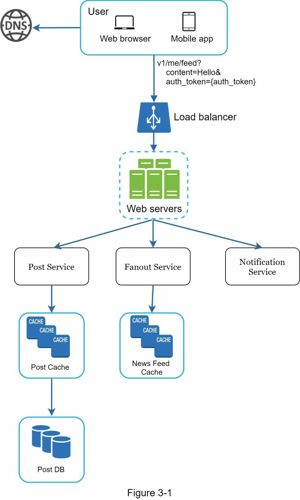
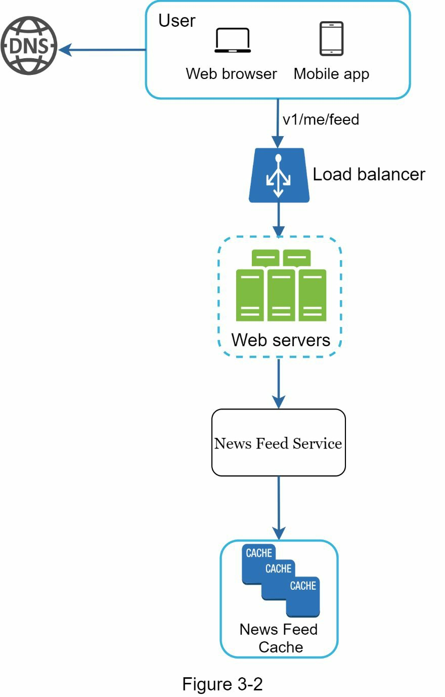
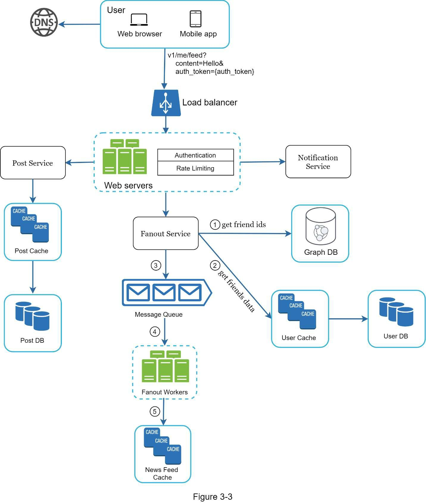
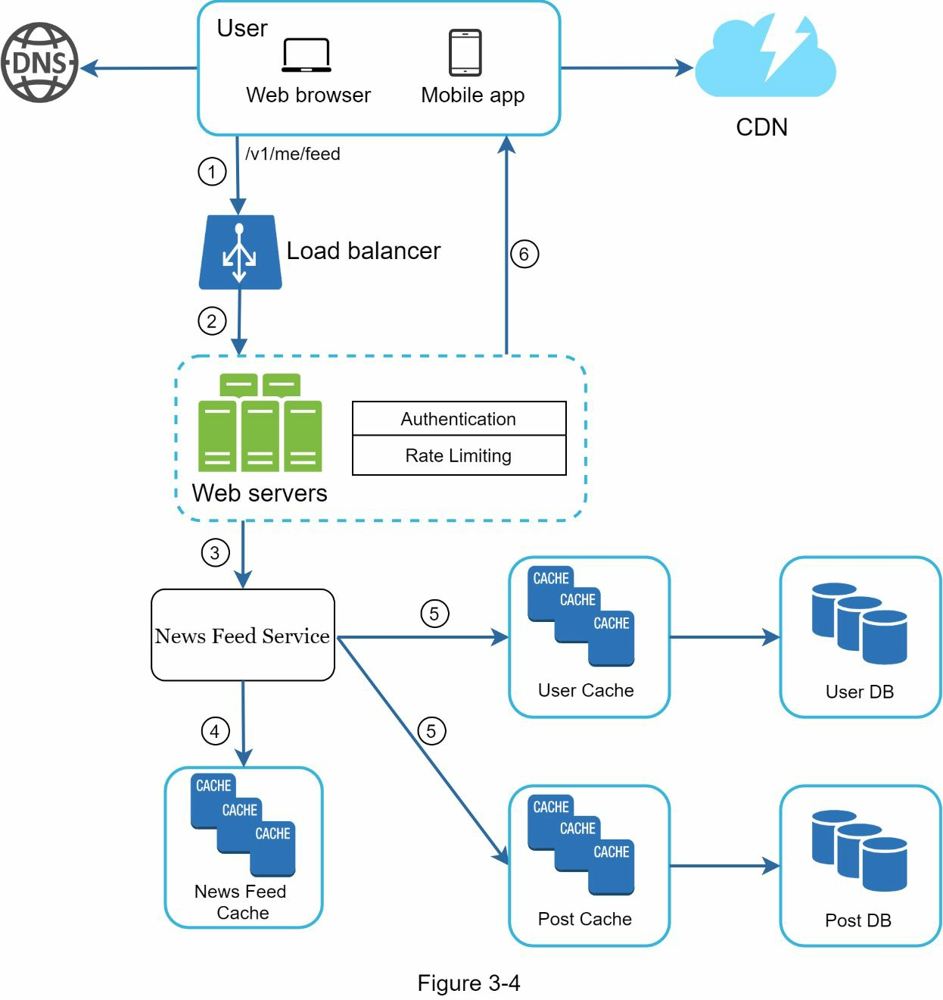

系统设计面试框架
你刚刚在你梦想中的公司获得了令人羡慕的现场面试机会。招聘协调员给你发了一份当天的时间表。扫视清单，你感觉很好，直到你的目光落在这个面试环节–系统设计面试。
系统设计面试往往令人生畏。它可能像 “设计一个众所周知的产品 X？“一样模糊。问题模棱两可，看起来不合理地宽泛。你的疲惫是可以理解的。毕竟，怎么可能有人在一个小时内设计出一个流行的产品，而这个产品是花了几百个甚至几千个工程师才建成的？
好消息是，没有人期望你能做到。现实世界的系统设计是极其复杂的。例如，谷歌搜索具有欺骗性的简单性；然而，支撑这种简单性的技术数量确实令人吃惊。如果没有人期望你在一小时内设计出一个真实世界的系统，那么系统设计面试的好处是什么？
系统设计面试模拟了现实生活中的问题解决，两个同事合作解决一个模糊的问题，并提出一个符合他们目标的解决方案。这个问题是开放式的，没有完美的答案。与你在设计过程中付出的努力相比，最终的设计并不那么重要。这使你能够展示你的设计技能，为你的设计选择辩护，并以建设性的方式回应反馈。
让我们切换角度，考虑一下当面试官走进会议室与你见面时，她的脑子里在想什么。面试官的首要目标是准确评估你的能力。她最不希望的是，因为会议进行得不顺利，没有足够的信号，而给出一个没有结论的评价。面试官在系统设计面试中寻找的是什么？
许多人认为，系统设计面试是关于一个人的技术设计能力。它远不止于此。一个有效的系统设计面试给人以强烈的信号，表明一个人的合作能力，在压力下工作的能力，以及建设性地解决模糊性的能力。提出好问题的能力也是一项重要的技能，许多面试官专门寻找这种技能。
一个好的面试官也会寻找错误。过度工程化是许多工程师的一个真正的病症，因为他们喜欢设计的纯粹性，而忽视了权衡。他们往往没有意识到过度工程系统的复合成本，而许多公司为这种无知付出了高昂的代价。你当然不希望在系统设计面试中表现出这种倾向。其他的错误包括狭隘的心态、固执等等。
在这一章中，我们将讲述一些有用的技巧，并介绍一个简单而有效的框架来解决系统设计面试问题。
有效的系统设计面试的 4 个流程
每个系统设计面试都是不同的。一个好的系统设计面试是开放式的，没有一个放之四海而皆准的解决方案。然而，在每个系统设计面试中都有一些步骤和共同点。
理解问题并确定设计范围
“老虎为什么咆哮？”
班级后面有一只手举了起来。
“是的，吉米？"，老师回答。
“因为他很饿”。
“非常好，吉米”。
在整个童年时期，吉米一直是班上第一个回答问题的人。每当老师提出问题时，教室里总有一个孩子喜欢在问题上一试身手，不管他是否知道答案。这就是吉米。
吉米是一个王牌学生。他以能快速知道所有答案为荣。在考试中，他通常是第一个完成问题的人。在任何学术竞赛中，他都是老师的首选。
不要像吉米那样。
在系统设计面试中，不加思索地迅速给出答案不会给你加分。在没有彻底理解需求的情况下回答问题是一个巨大的错误，因为面试不是一个小游戏比赛。没有正确的答案。
所以，不要直接跳进去给出一个解决方案。慢下来。深入思考并提出问题以澄清需求和假设。这一点极为重要。
作为一个工程师，我们喜欢解决困难的问题并跳入最终的设计；然而，这种方法很可能导致你设计出错误的系统。作为一个工程师，最重要的技能之一是提出正确的问题，做出适当的假设，并收集建立一个系统所需的所有信息。因此，不要害怕提出问题。
当你提出问题时，面试官要么直接回答你的问题，要么要求你做出假设。如果是后者，请在白板或纸上写下你的假设。你以后可能会用到它们。
- 要问什么样的问题？提出问题以了解确切的要求。这里有一个问题清单，可以帮助你开始工作。
- 我们要建立什么具体的功能？
- 该产品有多少用户？
- 公司预计扩大规模的速度如何？3 个月、6 个月和 1 年后的预期规模是什么？
- 该公司的技术栈是什么？你可以利用哪些现有的服务来简化设计？
例子:
如果你被要求设计一个新闻源系统，你要问一些问题，帮助你澄清需求。你和面试官之间的对话可能是这样的。
候选人：这是一个移动应用程序吗？还是一个网络应用？或者两者都是？
面试官。都是。
应聘者：产品最重要的功能是什么？面试官。能够发帖并看到朋友的新闻提要。
应聘者：新闻源是按时间倒序还是按特定顺序排序的？特定顺序意味着每个帖子都有不同的权重。例如，来自你的亲密朋友的帖子比来自一个小组的帖子更重要。
采访者。为了简单起见，让我们假设 feed 是按逆时针顺序排序的。
候选人：一个用户可以有多少个朋友？面试官。5000
考生：流量是多少？面试官。1000 万日活跃用户（DAU）。
应聘者：饲料可以包含图片、视频，还是只有文字？
面试官：可以。它可以包含媒体文件，包括图片和视频。
以上是你可以问面试官的一些样本问题。理解要求并澄清含糊之处非常重要。
提出高层次的设计并获得认同
在这个步骤中，我们的目标是制定一个高层次的设计，并与面试官就设计达成一致。在这个过程中，与面试官合作是个好主意。
- 想出一个初步的设计蓝图。征求反馈意见。把你的面试官当作队友，一起工作。许多优秀的面试官喜欢交谈和参与。
- 在白板或纸上画出带有关键部件的方框图。这可能包括客户端（移动/网络）、API、网络服务器、数据存储、缓存、CDN、消息队列，等等。
- 做事后计算，评估你的蓝图是否符合规模限制。努力思考。在深入研究之前，如果有必要进行逆向计算，请与你的面试官沟通。
如果可能的话，通过一些具体的使用案例。这将帮助你确定高级设计的框架。也有可能这些用例会帮助你发现你还没有考虑过的边缘案例。
我们应该在这里包括 API 端点和数据库模式吗？这取决于问题的情况。对于像 “设计谷歌搜索引擎 “这样的大型设计问题，这有点太低级了。对于像为多人扑克游戏设计后端这样的问题，这是一个公平的游戏。与你的面试官沟通。
例子:
让我们用 “设计一个新闻源系统 “来演示如何进行高层设计。这里不要求你了解系统的实际工作情况。所有的细节将在第 11 章解释。
- 在高层次上，设计分为两个流程：Feed 发布和新闻源构建。
- 帖子发布：当用户发布帖子时，相应的数据被写入缓存/数据库，该帖子将被填充到朋友的新闻提要中。
- 新闻源构建：新闻源是通过将朋友的帖子按照逆时针顺序聚合起来而构建的。
图 3-1 和图 3-2 分别展示了新闻发布和新闻源构建流程的高级设计。
 设计深挖
在这一步，你和你的面试官应该已经实现了以下目标。
- 就总体目标和功能范围达成一致
- 为整体设计勾勒出一个高层次的蓝图
- 从你的面试官那里获得关于高级设计的反馈。
- 根据她的反馈，对深入研究的重点领域有了一些初步的想法
你应与面试官一起确定架构中的组件并确定其优先次序。值得强调的是，每次面试都是不同的。有时，面试官可能会发出暗示，她喜欢关注高层设计。有时，对于一个高级候选人的面试，讨论的可能是系统的性能特征，很可能集中在瓶颈和资源估计上。在大多数情况下，面试官可能希望你挖掘一些系统组件的细节。对于 URL 断链接生成器，深入研究将长 URL 转换为短 URL 的哈希函数设计是很有趣的。对于一个聊天系统，如何减少延迟和如何支持在线/离线状态是两个有趣的话题。
时间管理是非常重要的，因为你很容易被一些细微的细节所迷惑，而这些细节并不能体现你的能力。尽量不要涉足不必要的细节。例如，在系统设计面试中，详细谈论 Facebook feed 排名的 EdgeRank 算法并不理想，因为这需要很多宝贵的时间，而且不能证明你有能力设计一个可扩展的系统。
例子:
在这一点上，我们已经讨论了新闻源系统的高层次设计，面试官对你的提议感到满意。接下来，我们将调查两个最重要的用例。
- 新闻发布
- 新闻提要的检索
图 3-3 和图 3-4 显示了这两个用例的详细设计，这将在第 11 章中详细说明。
 总结
-
在这最后一步，面试官可能会问你一些后续问题，或者让你自由讨论其他的附加要点。这里有几个方向可以遵循。
- 面试官可能希望你找出系统的瓶颈，并讨论潜在的改进。千万不要说你的设计是完美的，没有什么可以改进的。总有一些东西是可以改进的。这是一个展示你的批判性思维的好机会，并留下一个好的最终印象。
- 给面试官一个关于你的设计的回顾可能是有用的。如果你提出了一些解决方案，这一点就特别重要。在漫长的会议之后，刷新你的面试官的记忆会很有帮助。
- 错误案例（服务器故障、网络丢失等）是很有趣的话题。
- 操作问题是值得一提的。你如何监控指标和错误日志？如何推广系统？
- 如何处理下一个规模曲线也是一个有趣的话题。例如，如果你目前的设计支持 100 万用户，你需要做什么改变来支持 1000 万用户？
- 如果你有更多的时间，提出你需要的其他细化措施。总结一下，我们总结了一份该做的和不该做的清单。
-
去做
- 总是要求澄清。不要假设你的假设是正确的。
- 理解问题的要求。
- 既没有正确的答案，也没有最好的答案。为解决一个年轻的初创公司的问题而设计的解决方案，与一个拥有数百万用户的成熟公司的解决方案是不同的。请确保你了解需求。
- 让面试官知道你在想什么。与你的面试官进行沟通。
- 如果可能的话，提出多种方法。
- 一旦你与你的面试官就蓝图达成一致，就对每个组件进行详细了解。先设计最关键的部分。
- 向面试官反映想法。一个好的面试官会像队友一样和你一起工作。
- 永远不要放弃。
-
不要去做
- 不要对典型的面试问题毫无准备。
- 不要在没有弄清要求和假设的情况下就跳进一个解决方案。
- 不要在一开始就对一个单一的组件进行太多细节的研究。先给出高层次的设计，然后再往下钻研。
- 如果你被卡住了，不要犹豫，向他们寻求提示。
- 再一次，沟通。不要在沉默中思考。
- 不要认为一旦你给出了设计，你的面试就结束了。直到你的面试官说你完成了，你才算完成。尽早、经常地征求反馈意见。
每个步骤的时间分配
系统设计的面试问题通常非常广泛，45 分钟或一个小时不足以涵盖整个设计。时间管理是必不可少的。你应该在每个步骤上花多少时间？以下是一个非常粗略的指南，指导你在 45 分钟的面试中分配时间。请记住，这只是一个粗略的估计，实际的时间分配取决于问题的范围和面试官的要求。
- 第 1 步 了解问题并确定设计范围。3 - 10 分钟
- 第 2 步 提出高层次的设计并获得认同：10 - 15 分钟
- 第 3 步 深入设计：10 - 25 分钟
- 第 4 步 总结。3-5 分钟